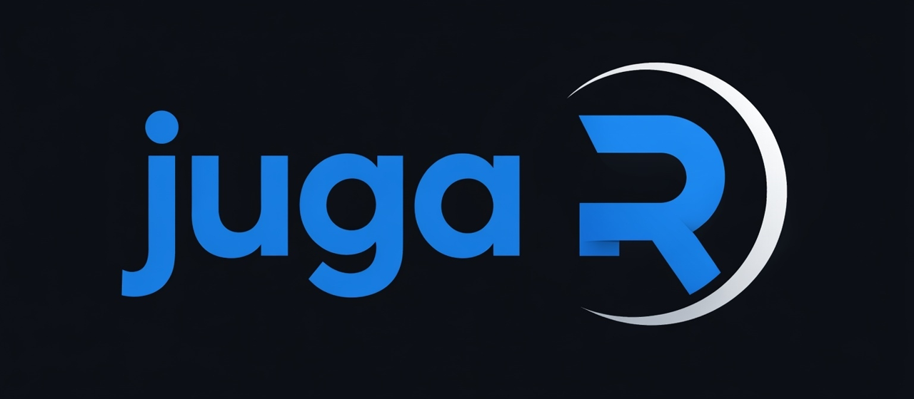

Convocatòria Projectes Innovació Docent 2025/2026 · Universitat de Lleida
La introducció a la lògica de programació és àrdua. JugaR en facilita l'aprenentatge?
Aquest projecte incorpora gamificació i aprenentatge basat en reptes per suavitzar la corba d'aprenentatge d'R.
- Centre
- Escola Tècnica Superior d'Enginyeria Agroalimentària i Forestal i de Veterinària (ETSEAFIV)
- Cursos
- 4t Grau en Conservació de la Natura / Màster Enginyeria de Forests
- Participants
- 22 estudiants (13 control, 9 experimental)
- Duració
- Segon semestre (Curs 2025/2026)
El projecte
Punt de partida i objectiusR és una eina essencial en la ciència de dades, però la seva corba inicial, agreujada per una sintaxi exigent i la manca d'interfícies visuals intuïtives, tendeix a frustrar l'alumnat. Com a resultat, es dedica massa docència a explicar la pròpia eina, llevant pes a l'anàlisi de la disciplina.
Articulem una gimcana a l'aula d'informàtica on l'estudiant treballa en reptes estructurats però, a mig procés, ha d'intercanviar la màquina amb una altra parella per revisar, avaluar i millorar el codi escrit fins a aquell moment.
Avaluar un tercer obliga a posar en pràctica el sentit crític i a entendre la mecànica del codi.
- O1Comprendre la lògica de llenguatge orientat a objectes en R, manipulant vectors i data frames.
- O2Llegir i escriure codi R de forma estructurada, eficient i aplicable a reptes de la disciplina.
- O3Consolidar coneixements mitjançant la revisió per parells.
Metodologia
-
Fase 1: Sessió Teòrica
Introducció formal a RStudio i definició d'elements estructurals. Explicació focalitzada en l'entorn de treball, objectes, vectors, matrius, funcions bàsiques i integració de biblioteques basades 100% en programari lliure.
-
Fase 2: Gimcana interactiva
Resolució de reptes en parelles a l'aula d'informàtica de forma gamificada. Cada alumne inicia la solució, canvia d'estació i ha de prendre decisions sobre el codi del company: corregir errors existents i continuar el desenvolupament.
-
Fase 3: Avaluació
Prova tipus test dels continguts explicats durant la sessió teòrica i la gimcana. Test de contrast entre el grup experimental i control.
| Instrument | Grup | n |
|---|---|---|
| Prova de continguts | Gr. Control | 13 |
| Prova de continguts | Gr. Experimental | 9 |
| Enquesta de satisfacció | Gr. Experimental | 7 |
Disseny experimental: El grup experimental (amb dos cursos menys d'experiència acadèmica que el control) rep formació gamificada amb un cost econòmic de 0€, emprant exclusivament ecosistemes de codi obert fàcilment replicables en qualsevol assignatura nova.
Resultats i Avaluació
- 5,33
- Nota mitjana (sobre 10) al grup experimental enfront al 4,46 del control, malgrat tenir dos cursos menys d'experiència prèvia.
- + 1,5
- Punts de millora en la secció de resolució i depuració d'errors respecte al control.
- 0€
- Cost total d'implementació gràcies a l'ús de software lliure, garantint una replicabilitat immediata i sense barreres pressupostàries.
Interpretació de resultats
Un aspecte clau a destacar és que el grup experimental ha superat o igualat en pràcticament tots els blocs al grup control, malgrat que aquest darrer compta amb dos cursos més d'experiència acadèmica. Això suggereix una eficàcia alta de la metodologia gamificada.
Pel que fa les habilitats en la creació i ús de funcions pròpies, els resultats mostren un comportament molt similar entre ambdós grups. En tractar-se de l'estadi més abstracte de la programació bàsica, s'evidencia que la seva consolidació requereix una major continuïtat temporal, tot i que la moetodologia proposada aconsegueix equiparar un alumnat més novell amb un altre d'avançat.
Finalment, cal subratllar que l'ús exclusiu de programari lliure permet una replicabilitat a cost 0€, facilitant que qualsevol docent pugui adoptar i escalar aquesta estructura metodològica sense dependre de pressupostos o llicències de pagament.
La kimitació més rellevant d'aquest projecte és la petita mostra (n=22). Tot i que aquesta limitació estadística impedeix assolir una significació estadítica en els contrastos numèrics, l'anàlisi semiquantitativa de dades revela una tendència positiva vers a la metodologia d'aprenentatge proposada.
Percepció del grup experimental
D'acord amb els qüestionaris de satisfacció recollits, el projecte ha tingut una acollida excel·lent, registrant una valoració global de 8,7 sobre 10. Unànimement, els estudiants destaquen que l'activitat era clara i que el treball per parelles ha resultat fonamental per afrontar els obstacles inicials del llenguatge R.
Els alumnes perceben de manera clara i evident una millora en el seu aprenentatge, destacant especialment la interiorització dels tipus de dades i la capacitat de raonar el codi. Un dels aspectes més valorats ha estat l'obligació de "pensar" i de no dependre del costum mecànic de copiar i enganxar fragments de codi. L'intercanvi d'estacions és reconegut com la peça clau que facilita l'aprenentatge segons els comentaris dels estudiants
Agunes valoracions...
"Haber hecho una sesión teórica antes de la práctica y empezar por lo más básico fue clave. En otras asignaturas simplemente copiabas cosas sin entender."
"M'ha ajudat molt el fet d'haver de pensar la solució i no només copiar codi de la pantalla."
"Va estar molt entretingut i vaig aprendre més que havent de copiar i enganxar codi."
Equip
-
Pere Joan Gelabert Vadillo
Departament de Ciència i Enginyeria Forestal i Agrícola.
-
Aitor Ameztegui González
Departament de Ciència i Enginyeria Forestal i Agrícola.